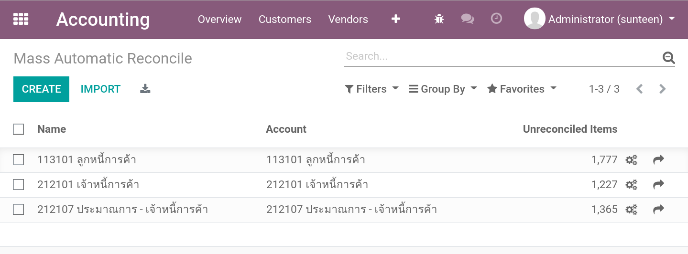
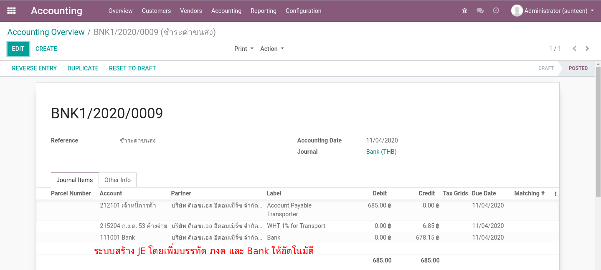
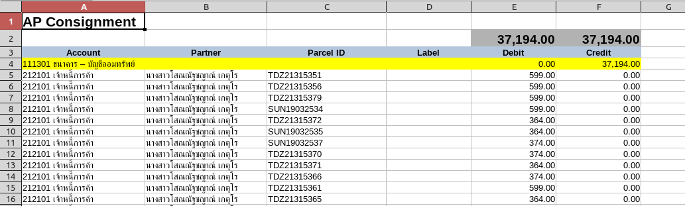

> Manual Payment¶
ระบบการเคลียร์หนี้ AR/AP
Mass Reconciliation¶
ในระบบของ 945 เพื่อให้การเคลียร์หนี้ (reconcile AR/AP) ทำได้อย่างรวดเร็ว เราจะใช้ฟังก์ชั่น Mass Automatic Reconcile
Menu: Accounting > Accounting > Actions > Mass Automatic Reconcile
ในทุกๆ Profile เราจะมีการเซตค่าตามรูป (ต่าง Account Code)
การทำงานของหน้าต่าง Mass Automatic Reconcile¶
ตั้งชื่อ Profile และเลือก Account Code
ตั้งกฏการ Reconcile ด้วย Partner และ Parcel ID
แสดงรายการ journal items ที่ใช้ Account เดียวกันจะอาจถูก reconcile หากจับคู่ได้ตรงตามกฏ
ทำการ Reconcile
ดูรายการ Reconcile ล่าสุดที่เกิดขึ้น (ดูย้อนหลังได้ที่ tab History)
Note
เราสามารถตั้งค่า Scheduled Job ให้ทำงานเป็นช่วงๆแบบอัตโนมัติได้ด้วย
Clear AR Provider¶
เมื่อได้รับ Statement จาก Transporter ว่าได้รับเงินเข้ามาจากลูกหนี้ของทาง 945 และต้องการเคลียร์ลูกหนี้ที่ค้างจ่าย
เตรียมไฟล์ Excel จากระบบเพื่อการตรวจสอบ (optional)
นำเข้า Statement ตามที่ได้รับแจ้งจาก Transporter
ทำการ Reconcile และตรวจสอบผลลัพธ์
1. เตรียมไฟล์ Excel จากระบบเพื่อการตรวจสอบ¶
Export journal items ที่สนใจมาเป็นค่าตั้งต้นหากต้องการเทียบกับ statement ที่ได้รับมา
กรองรายการด้วย Favorite = AR Provider
เลือกรายการที่ต้องการ Export
คลิกเมนู Action > Export Excel โดยเลือก Template = AR Provider

Note
ขั้นตอนนี้เป็นขั้นตอนพิเศษเพื่อได้ข้อมูลทดสอบ การทำงานจริงข้อมูลจะมาจาก statement ตรงๆ
ตัวอย่าง Excel ของการ Export Excel - AR Provider โดยจะมีการ Switch Dr/Cr ไว้รอ และจะมีการตั้ง Debit เข้าธนาคารเอาไว้ให้
โปรดตรวจสอบความถูกต้องก่อนทำการ Import เพื่อสร้าง Journal Entry

2. สร้าง Journal Entry ตาม statement ที่ได้รับแจ้ง¶
เตรียม Excel โดยใช้ข้อมูลจาก statement ที่ได้รับมา
ที่เมนู Journal Entries สร้างรายการใหม่ ซึ่งจะทำหน้าที่เป็น Payment Entry
ที่ JE, คลิกเมนู Action > Import Excel โดยเลือก Template = AR Provider
ตรวจทานให้เรียบร้อยจึงก่อน Post
สร้าง Journal Entry ใหม่เพื่อทำหน้าที่เป็น Payment Entry

เพิ่มรายการด้วยการ Import Excel ตามที่ได้เตรียมไว้โดยเลือก Template = AR Provider
ตรวจสอบให้แน่ใจ แล้วจึงค่อย Post (เฉพาะรายการที่ Posted แล้วเท่านั้นที่ Mass Reconcile จะสนใจ)

3. ทำการ Reconcile และตรวจสอบผลลัพธ์¶
ที่เมนู Mass Automatic Reconcile เลือก Profile = 113101 ลูกหนี้การค้า
กดปุ่ม Start Auto Reconciliation ระบบจะทำการ Reconcile รายการที่มี Partner และ Parcel ID เดียวกัน
กดปุ่ม Display Items Reconciled On The Last Run เพื่อดูรายการที่ถูก Reconciled ไป
หากต้องการยกเลิกสิ่งที่ทำไปให้ทำการ Reverse Entry
End.
Clear AP Commission¶
การบันทึกคู่บญชีอัตโนมัติของ Delivery Complete ได้ทำให้เกิดค่าคอมมิชชั่น ซึ่งทาง 945 ต้องทำจ่ายให้กับผู้ได้รับส่วนแบ่งที่เกี่ยวข้อง
เตรียมไฟล์ Excel จากระบบ เพื่อการจ่ายค่า Commission
นำเข้ารายการเพื่อสร้าง JE และ Split JE สำหรับแต่ละบุคคล
ออก Withholding Tax Cert ให้กับผู้รับเงินพร้อมๆกัน
ทำการ Reconcile และตรวจสอบผลลัพธ์
1. เตรียมไฟล์ Excel เพื่อการจ่ายค่า Commission¶
สำหรับ Commission จะดูตามวันที่ (เช่น ศุกร์ถัดไป) โดยสามารถค้นหาที่เมนู Journal Items ด้วย Filter ดังต่อไปนี้
กรองรายการด้วย Favorite = AP Commission
เลือกรายการที่ต้องการ Export
คลิกเมนู Action > Export Excel โดยเลือก Template = AP Commission

ตัวอย่าง Excel ของการ Export Excel - AP Commission โดยจะมีการ Switch Dr/Cr ไว้รอ และจะมีการตั้ง Debit เข้าธนาคารเอาไว้ให้ แต่ผู้ใช้งานต้องเพิ่มรายการ Withholding Tax ให้กับผู้รับ Commission เอง
2. นำเข้ารายการเพื่อสร้าง JE และ Split JE สำหรับแต่ละบุคคล¶
เตรียม Excel และตรวจทานความถูกต้อง และสร้าง Journal Entries เพื่อทำ Payment Entry
ที่ JE, คลิกเมนู Action > Import Excel โดยเลือก Template = AP Commission
ทำการ Split Journal Entry สำหรับแต่ละผู้รับส่วนแบ่ง
สร้าง Journal Entry ใหม่เพื่อทำหน้าที่เป็น Payment Entry

Import Excel ตามที่ได้เตรียมด้วย Template = AP Commission
ในขณะที่ JE ยังมีสถานะ Draft ให้ทำการ Split Journal Entry by Partner, ระบบทำการ Split JE ตาม จำนวนผู้รับส่วนแบ่ง (และลบ Journal Entry ตั้งต้นนี้)

ในตอนนี้เราจะมี Journal Entries สำหรับผู้รับส่วนแบ่งทุกๆคน เพื่อเราจะได้สามารถออก WHT Cert. ได้พร้อมๆกัน

3. ออก Withholding Tax Cert ให้กับผู้รับเงินพร้อมๆกัน¶
จาก Journal Entries ทั้งหมดในขั้นตอนก่อน เลือก Action > Create Withholding Cert

ระบบจะช่วยสร้าง Cert จากรายการที่บันทึก Account Code - WHT

ระบบจะสร้าง Withholding Tax Certs ให้ตามจำนวนของ Journal Entry

ให้ผู้ใช้งานตรวจสอบความถูกต้องแล้วกดปุ่ม Done
เลือก Print > Withholding Tax Cert เป็น PDF (สามารถ print ได้พร้อมๆกันหลายรายการ)
Note
ผู้ใช้งานสามารถดู Certificate. ทั้งหมดในภายหลังได้ที่เมนู Accounting > Vendors > WT Certificates
4. ทำการ Reconcile และตรวจสอบผลลัพธ์¶
ที่เมนู Mass Automatic Reconcile เลือก Profile = 212101 เจ้าหนี้การค้า
กดปุ่ม Start Auto Reconciliation ระบบจะทำการ Reconcile รายการที่มี Partner และ Parcel ID เดียวกัน
กดปุ่ม Display Items Reconciled On The Last Run เพื่อดูรายการที่ถูก Reconciled ไป
หากต้องการยกเลิกสิ่งที่ทำไปให้ทำการ Reverse Entry
End.
Clear AP Transport¶
- ย้ายเจ้าหนี้ประมาณการค่าขนส่งเป็นเจ้าหนี้ ด้วย Excel
เลือกรายการที่ต้องทำจ่าย (ครบกำหนดวันที่ 15 ของ 2 เดือนหลัง) และ Export Excel ตั้งต้น
ปรับปรุง JE และ Import Excel เพื่อสร้าง JE ล้างประมาณการเข้าเจ้าหนี้
ทำการ Reconcile และตรวจสอบผลลัพธ์
- การเคลียร์เจ้าหนี้ โดยจะมีการหักภาษี ณ ที่จ่าย ภงด 53 ไว้ 1% ด้วย Journal Entry
สร้าง Journal Entry ด้วย Template ที่เตรียมไว้ล่วงหน้า
Manual Reconcile เพื่อเคลียร์เจ้าหนี้ขนส่ง
ออกเอกสาร Withholding Tax Cert.
Note
การย้ายเจ้าหนี้ประมาณการค่าขนส่งเป็นเจ้าหนี้ กรณีต้องเทียบกับรายการส่งจริง (delivery statement) จำนวนมาก สามารถไปใช้วิธีการสร้าง JE Switched Dr/Cr ตรงจาก Journal Items ได้
1.1 เลือกรายการที่ต้องทำจ่าย¶
รายการประมาณการค่าขนส่ง จะดูตามวันที่ 15 โดยสามารถค้นหาที่เมนู Journal Items
กรองรายการด้วย Favorite = AP Transport
เลือกรายการที่ต้องการ Export
คลิกเมนู Action > Export Excel โดยเลือก Template = AP Transport Estimated
ตัวอย่าง Excel ของการ Export Excel - AP Transport Estimated โดยจะมีการ Switch Dr/Cr ไว้รอ แต่ผู้ใช้งานต้องเพิ่มรายการปรับปรุงรายการเมื่อเทียบกับข้อมูล External เอง

ข้อมูลที่ Export ออกมาจาก Odoo
ให้นำข้อมูลที่ได้จาก Transporter ใส่ที่ External
ระบบจะเปรียบเทียบรายการที่ตรงกัน
ให้ทำการลบรายการที่ไม่ตรงกัน
ระบบได้ทำการคำนวนส่วนต่างค่าขนส่งให้เบื้องต้น แต่ผู้ใช้งานสามารถใส่ส่วนลดและอื่นๆได้เอง
1.2 Import Excel เพื่อสร้าง JE ล้างประมาณการเข้าเจ้าหนี้¶
สร้าง Journal Entry Vendor Bill ใหม่ แล้วจึงสร้างรายการด้วยการ Import Excel, ทำการกำหนดวันที่ถึงกำหนดขำระ และใส่ Remarks เพื่อการอ้างถึงในภายหลัง

Note
ต้องตรวจสอบให้แน่ใจ แล้วจึงค่อย Post
1.3 ทำการ Reconcile และตรวจสอบผลลัพธ์¶
ที่เมนู Mass Automatic Reconcile เลือก Profile = 212107 ประมาณการ - เจ้าหนี้การค้า
กดปุ่ม Start Auto Reconciliation ระบบจะทำการ Reconcile รายการที่มี Partner และ Parcel ID เดียวกัน
กดปุ่ม Display Items Reconciled On The Last Run เพื่อดูรายการที่ถูก Reconciled ไป
หากต้องการยกเลิกสิ่งที่ทำไปให้ทำการ Reverse Entry
2.1 สร้าง Journal Entry ด้วย Template - Pay for AP Transporter¶
Menu: Accounting > Accounting > Create Entry from Template
ให้เลือก Template ให้ถูกต้องและกดปุ่ม Next
ใส่ข้อมูลตามรูป แล้วกดปุ่ม Create Journal Entry

ระบบจะช่วยสร้าง Journal Entry ให้ พร้อมๆกับช่วยคำนวน WHT 1% ด้วย
2.2 Manual Reconcile ลูกหนี้ค่าขนส่ง¶
ขึ้นตอนนี้เราจะใช้วิธี Manual Reconcile โดยไม่ผ่าน Mass Automatic Reconcile เหมือนกรณีอื่นๆเนื่องจาก จะเป็นการล้าง รายการเจ้าหนี้ Transporter ตรงๆ (ไม่มี Parcel ID)
ไปที่หน้าต่าง Journal Items
Filter รายการ Unreconciled, เจ้าหนี้การค้า ที่ไม่มี Parcal ID
เลือกรายการ และทำการ Reconcile ผ่าน Action
ตรวจสอบ และกดปุ่ม Reconcile

2.3 ออก Withholding Tax Cert ให้กับผู้รับเงิน¶
จาก Journal Entry ในขั้นตอนก่อน เลือก Action > Create Withholding Cert
ระบบจะช่วยสร้าง Cert จากรายการที่บันทึก Account Code - WHT
ให้ผู้ใช้งานกรอกข้อมูลให้ครบแล้วกด Save ตรวจสอบความถูกต้องแล้วกดปุ่ม Done
เลือก Print > Withholding Tax Cert เป็น PDF
End.
Clear AP Service¶
การบันทึกคู่บญชีอัตโนมัติของ Delivery Complete ได้ทำให้เกิดค่าบริการ ซึ่งทาง 945 ต้องทำจ่ายให้กับผู้ให้บริการ
เลือกรายการที่ต้องทำจ่าย โดยดูตามวันที่ (ครบกำหนดวันที่ 15 ของ 2 เดือนหลัง) และนำไปสร้าง Journal Entry สำหรับการจ่ายเงิน
ออก Withholding Tax Cert ให้กับผู้รับเงิน
บันทึกเลขที่ Tax Invoice และทดสอบการออกรายงานภาษี
ทำการ Reconcile และตรวจสอบผลลัพธ์
1. เลือกรายการที่ต้องทำจ่าย¶
รายการประมาณการค่าขนส่ง จะดูตามวันที่ 15 โดยสามารถค้นหาที่เมนู Journal Items
กรองรายการด้วย Favorite = AP Service
เลือกรายการที่ต้องการ Export
คลิกเมนู Action > Export Excel โดยเลือก Template = AP Service

ตัวอย่าง Excel ของการ Export Excel - AP Service โดยจะมีการ Switch Dr/Cr ไว้รอ แต่ผู้ใช้งานต้องเพิ่มรายการปรับปรุงรายการเมื่อเทียบกับข้อมูล External เอง

ข้อมูลที่ Export ออกมาจาก Odoo
ให้นำข้อมูลที่ได้จาก Transporter ใส่ที่ External
ระบบจะเปรียบเทียบรายการที่ตรงกัน
ให้ทำการลบรายการที่ไม่ตรงกัน
ระบบได้ทำการคำนวนส่วนต่างค่าขนส่งให้เบื้องต้น แต่ผู้ใช้งานสามารถใส่ส่วนลดและอื่นๆได้เอง
2. ออก Withholding Tax Cert ให้กับผู้รับเงิน¶
จาก Journal Entry ในขั้นตอนก่อน เลือก Action > Create Withholding Cert
ระบบจะช่วยสร้าง Cert จากรายการที่บันทึก Account Code - WHT
ให้ผู้ใช้งานกรอกข้อมูลให้ครบแล้วกด Save ตรวจสอบความถูกต้องแล้วกดปุ่ม Done
เลือก Print > Withholding Tax Cert เป็น PDF
3. Import Excel เพื่อสร้าง JE สำหรับการจ่าย¶
สร้าง Journal Entry Bank ใหม่ แล้วจึงสร้างรายการด้วยการ Import Excel
เนื่องจากมีรายการ VAT ที่ต้องการ Tax Invoice ระบบจะยังไม่ให้ Post
ใส่ข้อมูล Tax Invoice
ทำการ Post
4 ทำการ Reconcile และตรวจสอบผลลัพธ์¶
ที่เมนู Mass Automatic Reconcile เลือก Profile = 212101 เจ้าหนี้การค้า
กดปุ่ม Start Auto Reconciliation ระบบจะทำการ Reconcile รายการที่มี Partner และ Parcel ID เดียวกัน
กดปุ่ม Display Items Reconciled On The Last Run เพื่อดูรายการที่ถูก Reconciled ไป
หากต้องการยกเลิกสิ่งที่ทำไปให้ทำการ Reverse Entry
End.
Clear AP Consignment¶
การบันทึกคู่บญชีอัตโนมัติของ Account Payable Transfer ได้ทำให้เกิดค่า Consignment Payable ซึ่งทาง 945 ต้องทำจ่ายให้กับผู้ที่เกี่ยวข้อง
เตรียมไฟล์ Excel จากระบบ เพื่อการจ่ายค่า Consignment
นำเข้ารายการเพื่อสร้าง JE สำหรับการจ่ายเงิน
ทำการ Reconcile และตรวจสอบผลลัพธ์
1. เตรียมไฟล์ Excel เพื่อการจ่ายค่า Consignment¶
สำหรับ Consignment จะดูตามวันที่ (เช่น ศุกร์ถัดไป) โดยสามารถค้นหาที่เมนู Journal Items ด้วย Filter ดังต่อไปนี้
กรองรายการด้วย Favorite = AP Consignment
เลือกรายการที่ต้องการ Export
คลิกเมนู Action > Export Excel โดยเลือก Template = AP Consignment
ตัวอย่าง Excel ของการ Export Excel - AP Commission โดยจะมีการ Switch Dr/Cr ไว้รอ และจะมีการตั้ง Debit เข้าธนาคารเอาไว้ให้
2. นำเข้ารายการเพื่อสร้าง JE สำหรับการจ่ายเงิน¶
เตรียม Excel และตรวจทานความถูกต้อง และสร้าง Journal Entries เพื่อทำ Payment Entry
ที่ JE, คลิกเมนู Action > Import Excel โดยเลือก Template = AP Consignment
สร้าง Journal Entry และ Import Excel ตามที่ได้เตรียมด้วย Template = AP Consignment หลังจากตรวจสอบ แล้วจึงทำการ Post
3. ทำการ Reconcile และตรวจสอบผลลัพธ์¶
ที่เมนู Mass Automatic Reconcile เลือก Profile = 212101 เจ้าหนี้การค้า
กดปุ่ม Start Auto Reconciliation ระบบจะทำการ Reconcile รายการที่มี Partner และ Parcel ID เดียวกัน
กดปุ่ม Display Items Reconciled On The Last Run เพื่อดูรายการที่ถูก Reconciled ไป
หากต้องการยกเลิกสิ่งที่ทำไปให้ทำการ Reverse Entry
End.
Clear AP COD¶
การบันทึกคู่บญชีอัตโนมัติได้ทำให้เกิดค่า COD Payable ซึ่งทาง 945 ต้องทำจ่ายให้กับผู้ที่เกี่ยวข้อง
เตรียมไฟล์ Excel จากระบบ เพื่อการจ่ายค่า COD
นำเข้ารายการเพื่อสร้าง JE สำหรับการจ่ายเงิน
ทำการ Reconcile และตรวจสอบผลลัพธ์
1. เตรียมไฟล์ Excel เพื่อการจ่ายค่า COD¶
สำหรับ COD จะดูตามวันที่ โดยสามารถค้นหาที่เมนู Journal Items ด้วย Filter ดังต่อไปนี้
กรองรายการด้วย Favorite = AP COD
เลือกรายการที่ต้องการ Export
คลิกเมนู Action > Export Excel โดยเลือก Template = AP COD
ตัวอย่าง Excel ของการ Export Excel - AP Commission โดยจะมีการ Switch Dr/Cr ไว้รอ และจะมีการตั้ง Debit เข้าธนาคารเอาไว้ให้
2. นำเข้ารายการเพื่อสร้าง JE สำหรับการจ่ายเงิน¶
เตรียม Excel และตรวจทานความถูกต้อง และสร้าง Journal Entries เพื่อทำ Payment Entry
ที่ JE, คลิกเมนู Action > Import Excel โดยเลือก Template = AP COD
สร้าง Journal Entry และ Import Excel ตามที่ได้เตรียมด้วย Template = AP COD หลังจากตรวจสอบ แล้วจึงทำการ Post
3. ทำการ Reconcile และตรวจสอบผลลัพธ์¶
ที่เมนู Mass Automatic Reconcile เลือก Profile = 212101 เจ้าหนี้การค้า
กดปุ่ม Start Auto Reconciliation ระบบจะทำการ Reconcile รายการที่มี Partner และ Parcel ID เดียวกัน
กดปุ่ม Display Items Reconciled On The Last Run เพื่อดูรายการที่ถูก Reconciled ไป
หากต้องการยกเลิกสิ่งที่ทำไปให้ทำการ Reverse Entry
End.
Create Switched Dr/Cr JE¶
การทำงานนี้สร้างมาเพื่อแก้ปัญหาการทำงานกับรายการใน Excel จำนวนมาก (มากกว่าแสนรายการ) เพื่อสร้าง JE ย้ายเจ้าหนี้ ใน AP Transport เพื่อแก้ปัญหาการ Export / Import Excel ซึ่ง Excel ไม่สามารถรับรายการจำนวนมากขนาดนั้นได้
โดยวิธีนี้เป็นการข้ามการใช้งาน Excel ไปเลย การทำงานจะประกอบด้วย
Import รายการ Delivery Statement (by Parcel) เข้าที่หน้าต่าง Vendors > Delivery Statement
ที่หน้าต่าง Journal Items เลือก items ที่ต้องการ export และทำ Action > Create Switched Dr/Cr JE
ที่ JE ที่สร้างใหม่ ทำการตรวจสอบส่วนต่างด้วย Action > Verify with Delivery Statement และปรับปรุง JE
1. Import Delivery Statement (ที่ได้รับจาก Transporter)¶
Menu: Accounting > Vendors > Delivery Statement
Note
หัว Column ในไฟล์ Excel ที่ต้องการ Import
ถ้าจำนวนรายการเยอะมาก แนะนำให้ใช้ Import in the background
2. เลือก journal items AR Transport ที่ต้องการ export เพื่อสร้าง JE¶
กรอกข้อมูลสำหรับสร้าง Journal Entry
3. ตรวจสอบส่วนต่างด้วย Action > Verify with Delivery Statement¶
ตรวจสอบกับ Parcel Number จากหน้าต่าง Delivery Statement โดย 1) ลบรายการที่ไม่เจอ 2) ประเมินส่วนต่าง
โดยหลังจากตรวจสอบเสร็จ ระบบจะแจ้งผลในส่วน Chatter ด้านล่างของเอกสาร ผู้ใช้งานสามารถนำค่านี้ไปปรับ JE ตามต้องการ
End.